Dragon Ball watch order.
Every Dragon Ball series and movie placed where it fits in the story, from Goku’s childhood to Super Hero. Most of the older films are non-canon side stories, so each is placed where it fits best. GT is a non-canon sequel to Z, so it follows Daima before the Super era begins.
Enter this code in Kuvacult to create this watchlist, already in order.
Dragon Ball in order
 1
1Dragon Ball
 2
2Dragon Ball: Curse of the Blood Rubies
 3
3Dragon Ball: Sleeping Princess in Devil’s Castle
 4
4Dragon Ball: Mystical Adventure
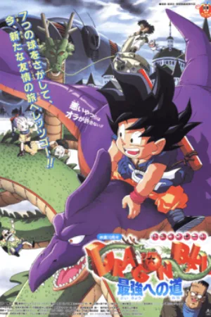
5Dragon Ball: The Path to Power
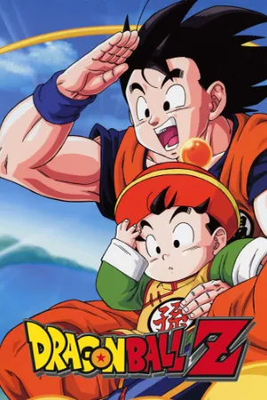
6Dragon Ball Z
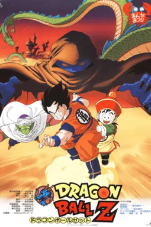
7Dragon Ball Z: Dead Zone
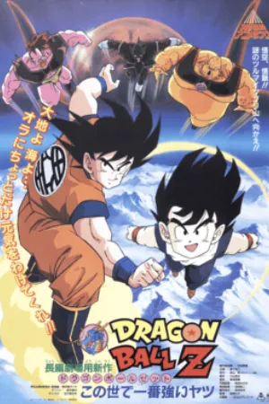
8Dragon Ball Z: The World’s Strongest
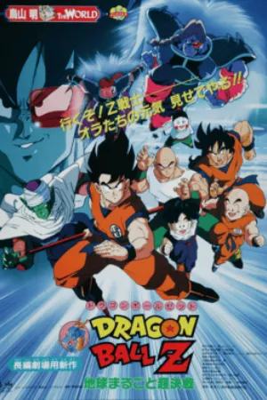
9Dragon Ball Z: The Tree of Might
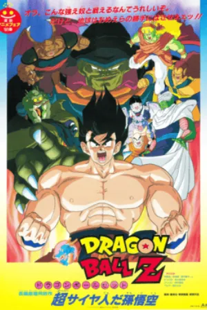
10Dragon Ball Z: Lord Slug
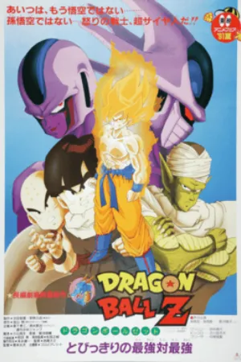
11Dragon Ball Z: Cooler’s Revenge
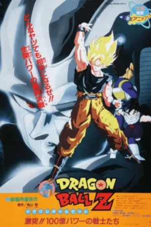
12Dragon Ball Z: The Return of Cooler
- 13
Dragon Ball Z: Super Android 13!
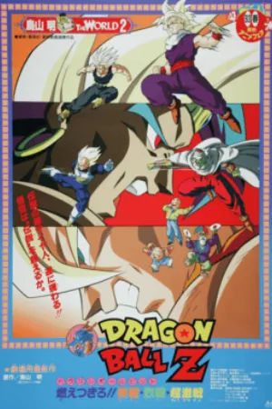
14Dragon Ball Z: Broly – The Legendary Super Saiyan
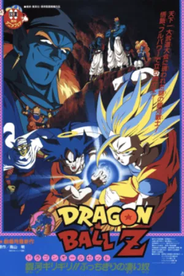
15Dragon Ball Z: Bojack Unbound
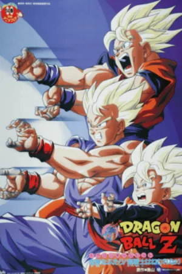
16Dragon Ball Z: Broly – Second Coming
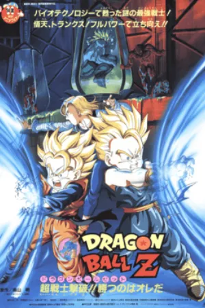
17Dragon Ball Z: Bio-Broly
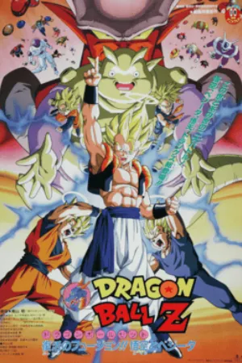
18Dragon Ball Z: Fusion Reborn
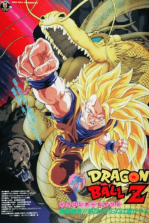
19Dragon Ball Z: Wrath of the Dragon
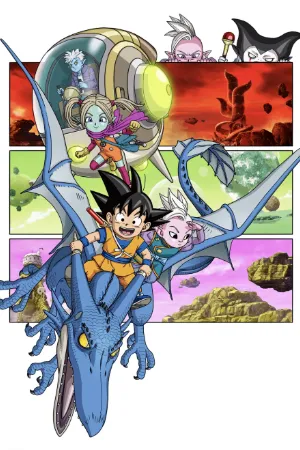
20Dragon Ball Daima
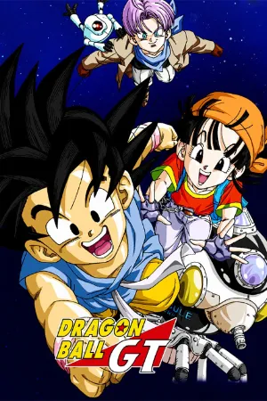
21Dragon Ball GT
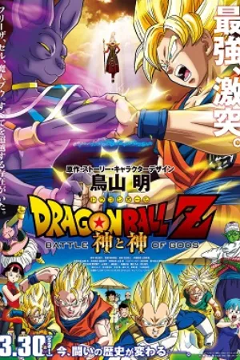
22Dragon Ball Z: Battle of Gods
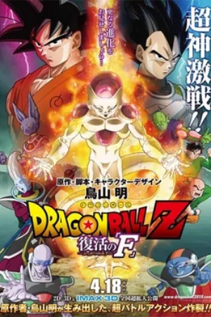
23Dragon Ball Z: Resurrection ‘F’
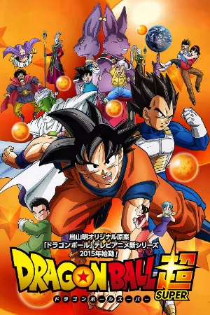
24Dragon Ball Super
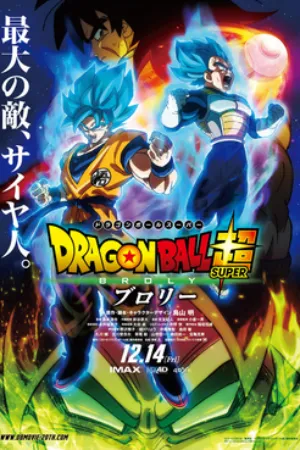
25Dragon Ball Super: Broly
- 26
Dragon Ball Super: Super Hero
Thank you, Akira Toriyama.
Dragon Ball shaped my childhood. I grew up racing home to watch Goku train, fight and get back up again, and those stories are a big part of why I love film and animation today. A lot of Kuvacult exists because of the hours I spent with his worlds.
Akira Toriyama passed away on March 1, 2024. Rest in peace, and thank you for everything.
— Ydlm88, creator of Kuvacult
Questions
Do I need to watch every Dragon Ball movie?
No. Only Battle of Gods, Resurrection ‘F’, Broly and Super Hero are part of the main story. The older films are side stories you can watch for fun.
Is Dragon Ball Kai the same as Dragon Ball Z?
Dragon Ball Z Kai is a shorter recut of Dragon Ball Z with most filler removed. You can watch it in place of Z.
Should I watch Battle of Gods or the first arcs of Super?
Either. The first two arcs of Dragon Ball Super retell Battle of Gods and Resurrection ‘F’, so pick one.
Is Dragon Ball GT canon?
No. GT was made for TV and is not part of the main story, but it is a popular continuation of Z.
More chronological orders


Watch it with your friends.
Kuvacult is a free movie tracker with shared watchlists, a veto game for picking movie night, and séances for watching together.